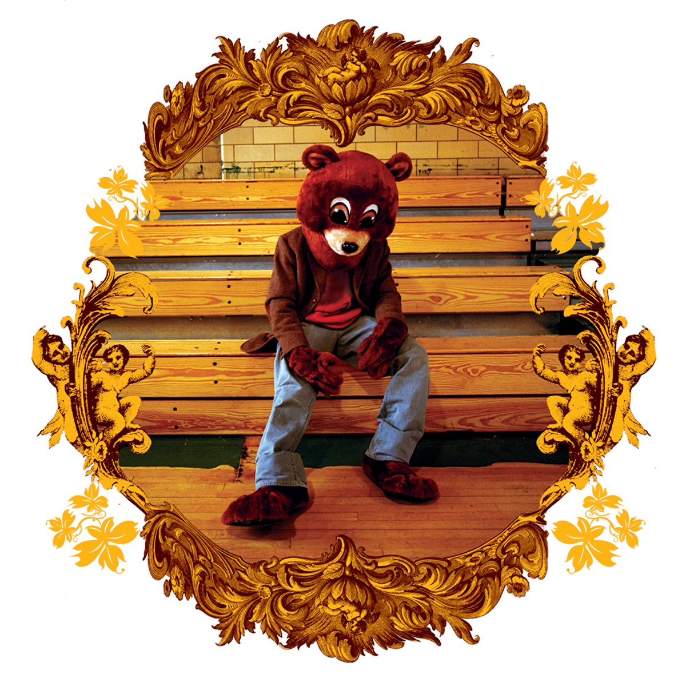

Producer first
Producer first
The sound began behind the boards.
Before becoming a superstar rapper, he built a reputation through Roc-A-Fella production and soul-sample beats, especially around Jay-Z's The Blueprint era.
A cinematic archive about Ye as producer, rapper, designer, rollout architect, and one of modern pop culture's most complicated creative figures. This version treats the page like a playable museum.
Kanye West, also known as Ye, is an American producer, rapper, fashion designer, and cultural figure. His story is not one lane. It is a chain reaction between beats, albums, fashion, live events, business, praise, criticism, and reinvention.
Producer first
Before becoming a superstar rapper, he built a reputation through Roc-A-Fella production and soul-sample beats, especially around Jay-Z's The Blueprint era.
 Designer
Designer
The fashion story is about more than shoes. It is earth tones, oversized silhouettes, sculptural footwear, minimal logos, and the idea that a musician can design a uniform for an era.
 Event maker
Event maker
Listening parties, livestreams, album revisions, stage architecture, and merch drops made the rollout feel like a public performance instead of a private release schedule.
The best way to understand Ye is by era. Each period changes the palette: warm soul, orchestral polish, stadium electronics, Auto-Tuned grief, maximalist luxury, industrial minimalism, gospel spectacle, and late-career fragmentation.

Soul samples, school anxiety, faith, humor, and producer-rapper ambition.
This guide focuses on why the albums matter. Some are classics, some are experiments, some are uneven, and the later work has to be read next to the public controversy around it.
The Life of Pablo, Donda, and the Vultures period show a pattern: the music arrives with livestreams, stadiums, unfinished drafts, surprise edits, visual codes, and fans watching the process in real time.
A Donda-style rollout turns the venue into a symbol. The house, lights, crowd, cars, smoke, and livestream become part of how the album is remembered.
Yeezy was powerful because it had a visual grammar: muted colors, strange shapes, comfort, futurism, scarcity, and a design identity that felt connected to the music.
 Nike chapter
Nike chapter
The Nike Air Yeezy era proved that a non-athlete could create sneaker hysteria. Red Octobers still read like a lightning strike in sneaker culture.
 adidas chapter
adidas chapter
The adidas run expanded Yeezy from one shoe into a design world: knit runners, chunky silhouettes, slides, foam forms, and colors that looked like desert, stone, ash, and clay.

The 350 V2 made the Yeezy look wearable every day: knit texture, side stripe, Boost sole, and a silhouette that became instantly recognizable.
The influence is not just sales or awards. It is how one artist changed the expectations around rap production, album identity, vulnerability, fashion, live events, and internet-era fandom.
A stronger fan archive should not flatten the story into worship. The art changed music and fashion. The public behavior, especially antisemitic statements and other offensive actions, also caused serious harm, criticism, and business fallout.
This version adds a research layer so the page feels like a real cultural archive instead of just a visual fan page.
Britannica summarizes West's early producer work, Roc-A-Fella rise, solo career, and fashion identity.
BritannicaThe Recording Academy artist page lists Grammy history and awards context.
GRAMMY.comChicago reporting documented the third Donda event at Soldier Field and its replica childhood home set.
Chicago Sun-TimesNPR covered 808s & Heartbreak as a deeply personal departure built around extreme Auto-Tune and emotional minimalism.
NPR archiveAdidas officially announced the end of the Yeezy partnership on October 25, 2022.
adidas statementPitchfork reported that Bully was released to streaming services on March 27, 2026.
Pitchfork newsCoverage of Carnival hitting No. 1 shows how the Vultures era still produced a major chart event.
The Source